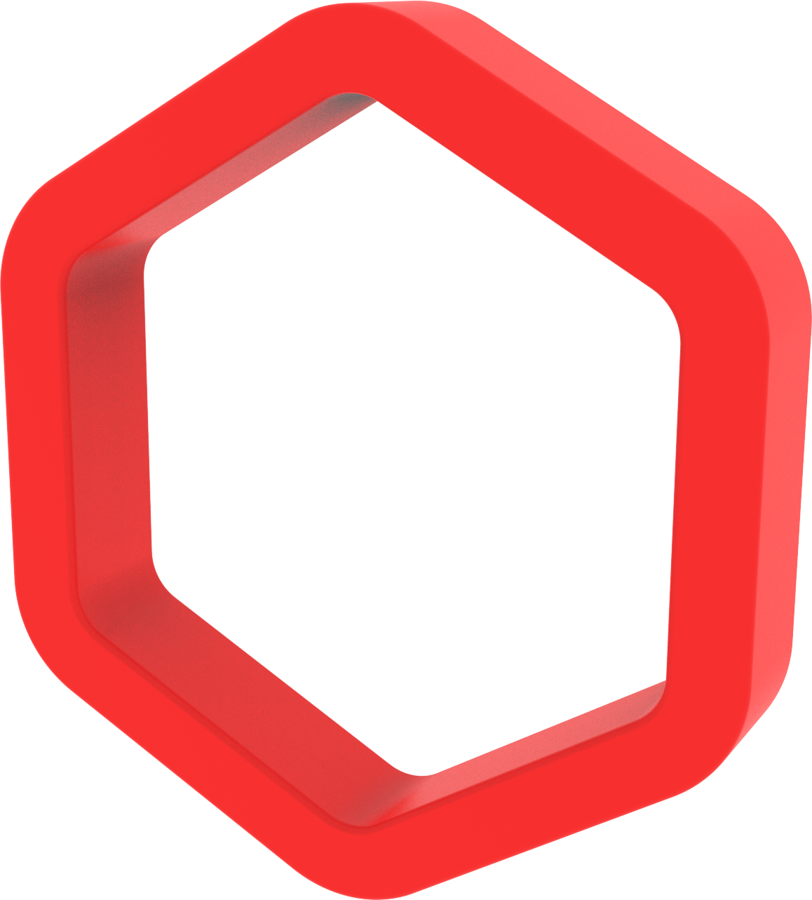
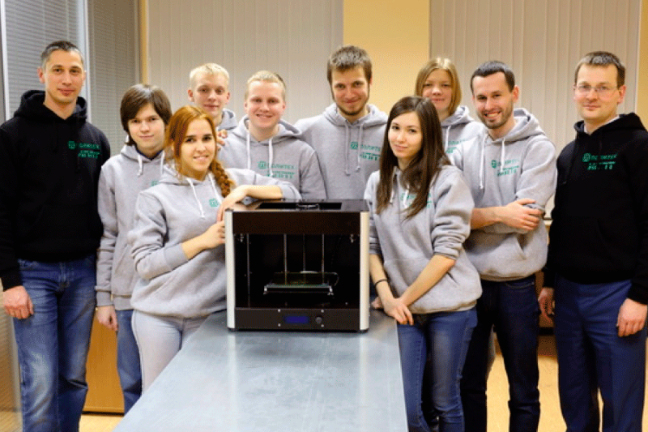
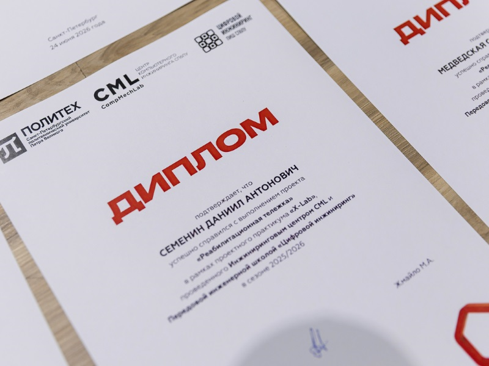

X-Lab - год командной работы над реальными задачами компаний-заказчиков. Не просто учебные примеры, а настоящий продукт
X-Lab совмещает проектирование, инжиниринг, изобретательскую работу, промышленный дизайн, электронику и цифровое производство — все то, что обычно изучается раздельно. Курс реализуется в Передовой инженерной школе СПбПУ «Цифровой инжиниринг»
Специализированный проектный практикум, рассчитанный на два семестра, а не на пару дней интенсива
В основе курса - задачи настоящих заказчиков, а не придуманные учебные кейсы
Команды взаимодействуют с заказчиком напрямую или через инструктора на всех этапах работы
От концепции и проектирования - через анализ и оптимизацию - до производства и тестирования.
Участники пробуют себя в разных ролях проектной команды и понимают специфику каждой
По итогам двух семестров работы готовое изделие тестируется, дорабатывается и передается заказчику
X-Lab строится на принципах CDIO (Conceive – Design – Implement – Operate) — международной концепции инженерного образования, где студенты проходят весь путь продукта: от замысла и проектирования до изготовления и эксплуатации, а не только решают отдельные учебные задачи.
Первый запуск состоялся в 2015 году: команды под руководством инструкторов разрабатывали двухэкструдерный FDM-принтер. Каждый участник собрал свой собственный экземпляр и смог забрать его.
Цель курса - дать команде прожить весь путь работы над проектом и на своем опыте столкнуться с его спецификой: распределением ролей, решением незнакомых прежде подзадач, объединением знаний из разных дисциплин в одном изделии, управлением временем и ресурсами, долгим взаимодействием с одной и той же командой - и с осознанием того, что спроектировать и изготовить продукт - это две нетривиальные задачи.
С сезона 2024/2025 при поддержке студии FORMA в работе X-Lab участвуют студенты направления «Промышленный дизайн» Санкт-Петербургского государственного университета промышленных технологий и дизайна. Инженерные команды получают продукт с продуманным внешним обликом, эргономикой и логикой использования, а студенты-дизайнеры - опыт разработки концепции и дизайна в условиях реальных конструктивных и технологических ограничений.


Шесть шагов от знакомства с задачей до сдачи готового прототипа заказчику
Участники разделяются на команды по 2–4 человека с учетом специфики каждого
Каждая команда выбирает задачу из ограниченного списка — с учетом приоритетов
Лекции и практические занятия готовят команду к командной и инженерной работе
В течение года команда решает поставленные задачи и еженедельно отчитывается о результатах
Команды получают ответы на вопросы и рекомендации от инструктора и команды X-Lab
Участники проходят путь до работающего прототипа и сдают его заказчику проекта
Проекты X-Lab обычно объединяют механику и электронику, с приоритетом на механическую часть. Отфильтруйте по категории или году и листайте стрелками
Проекты с такими параметрами не найдены
Что участники команд рассказывают о работе над проектами X-Lab - видео из группы ВКонтакте
X-Lab реализуется в Передовой инженерной школе СПбПУ «Цифровой инжиниринг» при участии Инжинирингового центра CML и студии промышленного дизайна FORMA
CML и FORMA - организаторы X-Lab - всегда открыты для новых заказов
CML - инжиниринговый центр Политехнического университета, специализирующийся на инженерном анализе, цифровых испытаниях и разработке продуктов «под ключ».
Команда центра работает с 1987 года и успешно выполняет проекты в интересах отечественных и иностранных компаний-заказчиков из различных отраслей промышленности
Заказать у CMLFORMA - студия промышленного дизайна, разрабатывающая впечатляющие продукты на стыке инженерии, эргономики и эстетики.
Студия существует с 2011 года и выполняет промышленный дизайн и проектирование продукции, от концепции до готового изделия, в широком спектре направлений, от продуктового до транспортного дизайна
Заказать у FORMAX-Lab работает с самыми разными заказчиками - от медицинских учреждений и фондов до технологических компаний. Мы рады сотрудничеству со всеми, кому интересна концепция X-Lab
Заказчики получают прототип продукта с нуля, студенты - год настоящей инженерной практики. Расскажите, что интересно именно вам.
Если вы хотели бы запустить X-Lab в своем учебном заведении, мы будем рады помочь вам в этом
195251, Санкт-Петербург, Политехническая ул., д. 29АФ, ауд. А.3.22